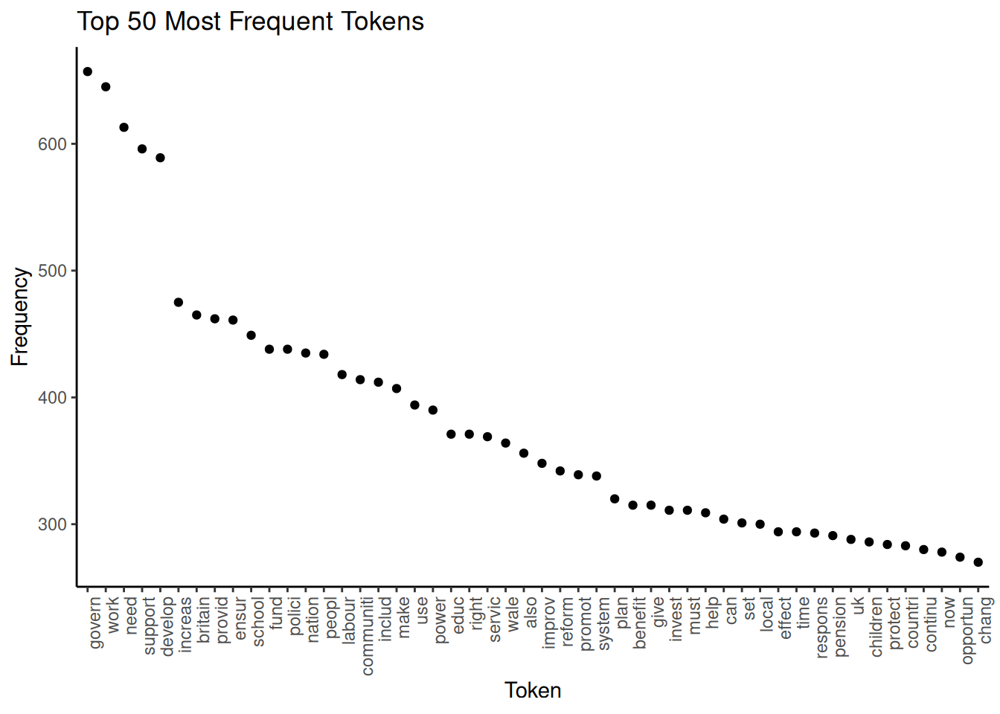
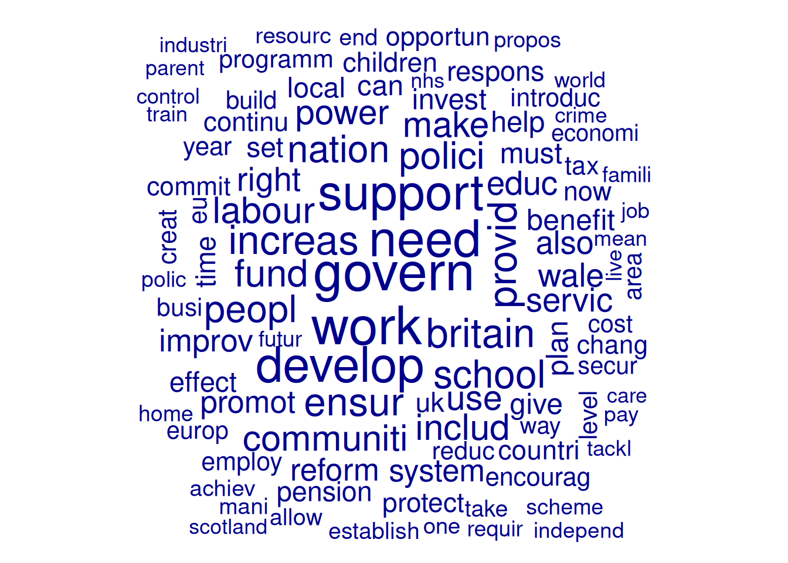
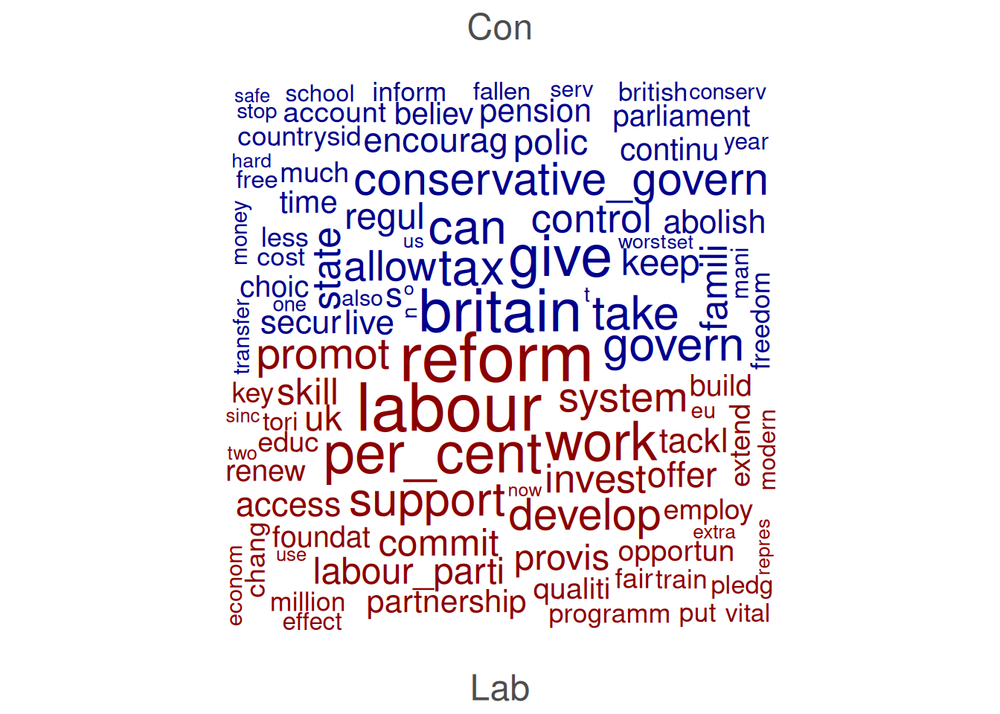

4.3 Descriptives and Visualisations
Now that we have finished our DFM and assessed the effects of the pre-processing steps, it is time to examine our resulting DFM. For this, quanteda offers a variety of options. We start with a look at the most frequent tokens:
features <- topfeatures(data_dfm_trimmed, 50) # Get the top 50 most frequent features from the DFM
features_plot <- data.frame(term = names(features), frequency = unname(features))
features_plot$term <- with(features_plot, reorder(term, -frequency)) # Reorder the terms by frequency in descending order
ggplot(features_plot, aes(x = term, y = frequency)) + geom_point() + theme_classic() +
scale_x_discrete(name = "Token") + scale_y_continuous(name = "Frequency") + ggtitle("Top 50 Most Frequent Tokens") +
theme(axis.text.x = element_text(angle = 90, hjust = 1)) We can see that the words “govern”, “work” and “need” are the most frequent, already indicating a little what our documents are about. Apart from this, a good use of a frequency graph is to spot stopwords you might wish to remove (for example, “also”) and include them in the list of stopwords.
Another option for examining frequencies is to use word clouds. Not only are they a visually appealing way to visualise term frequencies, but word size also indicates frequency. While less precise than bar plots, we can use them for a quick impression of prominent terms. To avoid clutter, here, we include only terms that appear at least 20 times and set the maximum number of words in the word cloud at 100:
wordcloud_dfm_trim <- dfm_trim(data_dfm_trimmed, min_termfreq = 20)
textplot_wordcloud(wordcloud_dfm_trim, max_words = 100)
We can also compare docvars. Here, we first subset the DFM to include only Labour and Conservative manifestoes. Then we group them and then set compare = TRUE:
data_dfm_compare <- dfm_subset(data_dfm_trimmed, Party %in% c("Lab", "Con"))
wordcloud_dfm_trim <- dfm_group(data_dfm_compare, data_dfm_compare$Party)
textplot_wordcloud(wordcloud_dfm_trim, comparison = TRUE, max_words = 200, color = c("darkblue",
"darkred"))
Another thing we can do is examine Keywords in Context (KWIC), which displays how specific words or phrases are used by showing them along with their surrounding words. This is useful for understanding the different senses of a word, identifying typical phrases it appears in, and exploring its usage across different documents or contexts. We perform KWIC analysis on the tokens object as the order of the words is still essential at this point:
# pattern = 'econom*': The term to search for (using glob for wildcard
# matching). This will find 'econom', 'economi', 'economist', etc., after
# stemming. valuetype = 'glob': Specifies that the pattern is a glob-style
# wildcard pattern. window = 3: Show 3 words before and 3 words after the
# keyword.
kwic_output <- kwic(data_tokens_stemmed, pattern = "econom*", valuetype = "glob",
window = 3)
head(kwic_output, 10)## Keyword-in-context with 10 matches.
## [UK_natl_1997_en_Con, 18] europ becom success | economi |
## [UK_natl_1997_en_Con, 67] global free_market emerg | econom |
## [UK_natl_1997_en_Con, 89] challeng turn around | econom |
## [UK_natl_1997_en_Con, 115] lowest tax major | economi |
## [UK_natl_1997_en_Con, 505] model fail just | econom |
## [UK_natl_1997_en_Con, 544] opportun push forward | econom |
## [UK_natl_1997_en_Con, 580] guis stakehold hard | econom |
## [UK_natl_1997_en_Con, 621] enterprise_centre_europ low tax | economi |
## [UK_natl_1997_en_Con, 638] public_spend choic two | econom |
## [UK_natl_1997_en_Con, 675] ensur grow less | economi |
##
## countri brought knee
## power rise east
## fortun fewer_people_work work
## europ mean continu
## triumph triumph human
## revolut began enter
## evid show great
## enterpris flourish state
## philosophi clear year
## whole economic_cycl timeThe kwic() function output includes the document name (docname), the position of the keyword (from, to), the surrounding context (pre, post), and the keyword itself (keyword).